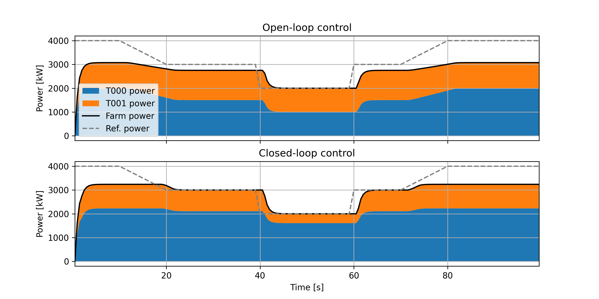
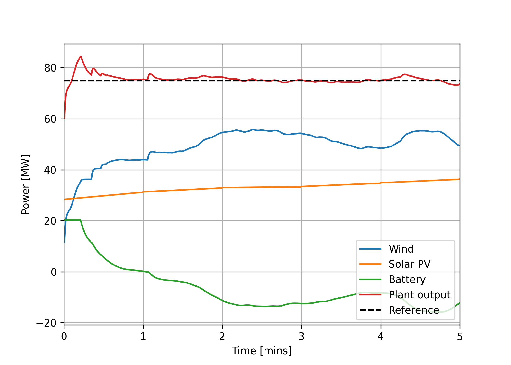

Examples#
The examples subdirectory contains a series of examples that can be run to test the functionality
of certain controllers and interfaces. Make sure you have installed Hercules
(see To run examples).
lookup-based_wake_steering_florisstandin#
2-turbine example of lookup-based wake steering control with LookupBasedWakeSteeringController, run using Hercules with the FLORIS standin in place of AMR-Wind for exposition purposes. To run this example, navigate to the examples/lookup-based_wake_steering_florisstandin folder and then run the following.
python construct_yaw_offsets.py
Not that, currently, construct_yaw_offsets.py requires FLORIS version 3, whereas the rest of the
example requires FLORIS version 4. As a result, we provide the generated offsets in
yaw_offsets.pkl. To avoid regenerating yaw_offsets.pkl (and therefore avoid the current need for
floris v3), set optimize_yaw_offsets = False at the beginning of construct_yaw_offsets.py before
running. The dependency on FLORIS version 3 will be removed soon.
Next, run the shell script run_script.sh:
bash run_script.sh
You will need to have and up-to-date Hercules (possibly on the develop branch) in your conda
environment to run this. You may also need to changed permissions to run bash_script.sh as an executable (chmod +x run_script.sh).
The plotting script plot_output_data.py is run at the end of the shell script, and should produce the following plot.
wind_farm_power_tracking_florisstandin#
2-turbine example of wind-farm-level power reference tracking with WindFarmPowerTrackingController and WindFarmPowerDistributingController, run using Hercules with the FLORIS standin in place of AMR-Wind for exposition purposes. To run this example, navigate to the examples/wind_farm_power_tracking_florisstandin folder and execute the shell script run_script.sh:
bash run_script.sh
This will run both a closed-loop controller, which compensates for underproduction at individual turbines, and an open-loop controller, which simply distributes the farm-wide reference evenly amongst the turbines of the farm without feedback. The resulting trajectories are plotted, producing: 
simple_hybrid_plant#
Example of a wind + solar + battery hybrid power plant using the HybridSupervisoryControllerBaseline to track a steady power reference. The plant comprises 10 NREL 5MW reference wind turbines (50 MW total wind capacity); a 100MW solar PV array; and a 4-hour, 20MW battery (80MWh energy storage capacity).
To run this example, navigate to the examples/simple_hybrid_plant folder and execute the shell script run_script.sh:
bash run_script.sh
This will run a short (5 minute) simulation of the plant and controller tracking a steady power reference. The resulting trajectories are plotted, producing: 
along with some extra plots showing each of the components (wind, solar, and battery) in more detail.